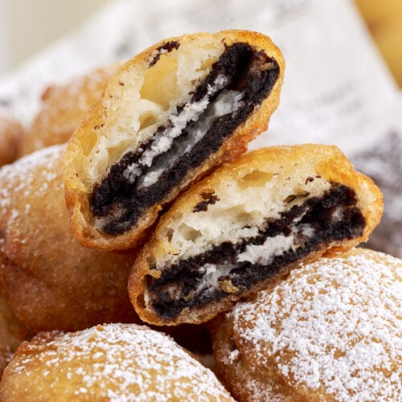

Deep Fried Oreos

Description
Deep-fried Oreos are a carnival favorite where I grew up. Oreos get dipped into pancake batter and fried — yummy! You can do this with or without a deep fryer.
Ingredients
- vegetable oil (for frying and for the batter)
- Milk
- An Egg
- Pancake mix
- package of Oreos (regular and Double Stuf Oreos both work great)
Steps
- Heat oil in a deep fryer or large saucepan to 375 degrees F (190 degrees C).
- Whisk milk, egg, and 2 teaspoons of vegetable oil in a large bowl until smooth. Stir in the pancake mix until no dry lumps remain.
- Dip cookies into batter, one at a time, and carefully place into hot oil. Fry in batches, 4 or 5 at a time, until cookies are golden brown, about 2 minutes. Drain on a paper towel-lined plate before serving.